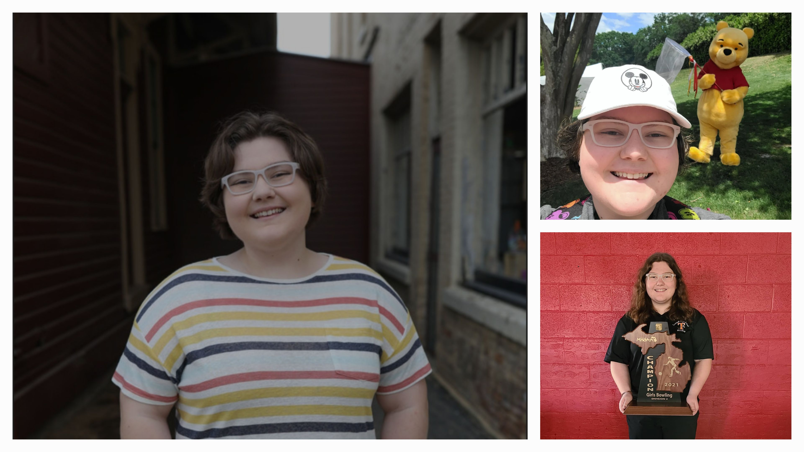
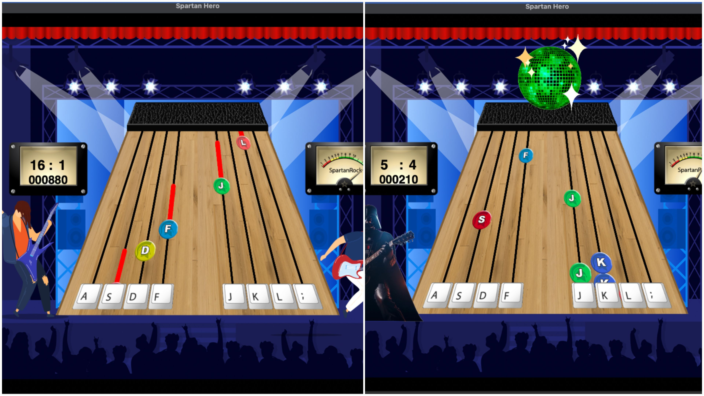

About

Hey i'm Abby! I go to school at Michigan State University. I've been passionate about computer science since a young age. Some fun facts about me are that I love bowling, and was even the third in the state my senior year of high school. I also love disney! Disney World is one of my favorite places on earth. My favorite ride is Rise of the resistance.
Experience
Internship:
Software Engineer at Headstarter AI
- Built a pantry tracker
- Created multiple AI projects
Spartan Hero:

Conceptualized and produced an interactive music game inspired by Guitar Hero, featuring multiple levels and intricate functionalities. Programmed game mechanics in C++ to handle music playback, user inputs, and score
tracking, ensuring seamless gameplay. Built a dynamic soundboard with multiple tracks and user-controlled pucks to play along with the backing track,
including support for long-duration notes. Worked with XML files to play the music. Collaborated with a team to
propose and implement additional features, such as custom levels and enhanced user interface.
Led team meetings, coordinated tasks, and ensured adherence to project timelines, highlighting strong
teamwork and project management skills during 2 sprints of the project.
Education

Senior studying Computer Science with a minor in Business.
GPA: 3.58
Courses:
Fall 2022:
Intro to Engineering Design
Calculus 2
Introduction to Programming I
Survey of Accounting Techniques
Spring 2023:
Introduction to Programmin II
Discrete Structures
Introduction to Microeconmics
Physics for Scientists and Engineers I
Fall 2023:
Algorithms and Data Structures
Computer Organization and Architecture
Matrix Algebra I
Introduction to Finance
Physics for Scientists and Engineers II
Spring 2024:
Computer Systems
Object Oriented Software Design
Social, Ethical, and Professional Ethics in Computing
Intro to Business Law
Probability and Statistics for Engineering
Fall 2024:
Biometrics and Pattern Recognition
Computer Networks
Web Application Architecture and Development
Management Skills and Processes
Introduction to Marketing
Contact